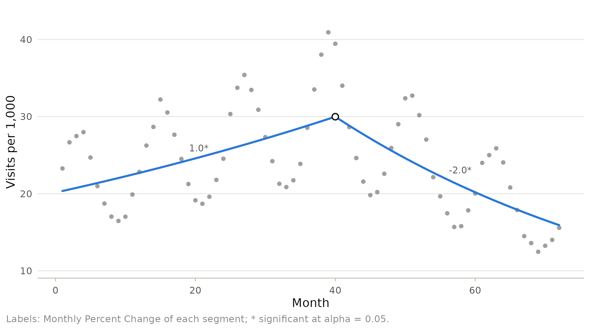
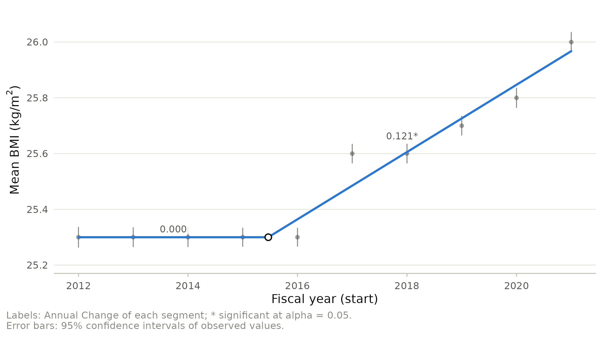

The classical joinpoint model is a least squares fit to a rate, with joinpoints at the observed years. Three common situations stretch it: the data are counts and their likelihood is known, the series has a seasonal pattern that is not part of the trend, and the trend changes between two observations. This vignette shows the extensions that handle each.
Counts: Poisson and binomial joinpoint models
When the data are counts of events, a generalized linear model uses their distribution directly: a Poisson regression with the population as exposure for rates, or a logistic regression for proportions (Czajkowski et al. 2008). The model is fitted by maximum likelihood for every admissible placement of the joinpoints, and the placement with the smallest deviance is the estimate.
Births with obesity class III in Ontario are binomial counts out of all births of the year. A logistic joinpoint model, fitted by maximum likelihood, and the least squares model of the log prevalence:
ob <- subset(ontario_bmi, category == "Obesity class III")
fit_bin <- joinpoint(ob, year, count = count, population = births,
family = "binomial", type = "percent", kmax = 2,
method = "bic")
fit_ls <- joinpoint(ob, year, count = count, population = births,
type = "percent", kmax = 2, method = "bic",
ci_method = "parametric")
knitr::kable(jp_table(fit_bin))| Trend | Period | APC (odds) / AAPC (odds) (95% CI) | p |
|---|---|---|---|
| Segment 1 | 2012-2015 | -1.74* (-2.90, -0.57) | 0.004 |
| Segment 2 | 2015-2021 | 3.73* (3.18, 4.28) | < 0.001 |
| AAPC (odds) | 2012-2021 | 1.87* (1.52, 2.23) | < 0.001 |
| Trend | Period | APC / AAPC (95% CI) | p |
|---|---|---|---|
| Segment 1 | 2012-2015 | -1.64 (-8.19, 5.37) | 0.564 |
| Segment 2 | 2015-2021 | 3.57* (1.34, 5.85) | 0.009 |
| AAPC | 2012-2021 | 1.80 (-0.28, 3.93) | 0.091 |
Both fits place the joinpoint in 2015, and for a rare outcome the change in the odds is practically the change in the prevalence, so the estimates agree. The intervals do not. A maximum likelihood fit fixes the dispersion at 1: it assumes that the yearly proportions vary only as binomial sampling of about 115,000 births allows. The model selection table shows that they vary more:
crit <- model_selection(fit_bin)$criteria
crit[, c("joinpoints", "deviance", "df", "dispersion", "bic", "selected")]
#> joinpoints deviance df dispersion bic selected
#> 1 0 77.16978 8 1 8.177495 FALSE
#> 2 1 30.66055 6 1 3.987089 TRUE
#> 3 2 27.41848 4 1 4.123399 FALSEThe selected model leaves a deviance of 30.7 on 6 degrees of freedom,
several times what binomial variation would produce. With
overdispersion = TRUE the dispersion is estimated from the
Pearson statistic of the largest model (quasi-likelihood), and every
Wald standard error on the log odds scale grows by its square root:
fit_qb <- joinpoint(ob, year, count = count, population = births,
family = "binomial", type = "percent", kmax = 2,
method = "bic", overdispersion = TRUE)
model_selection(fit_qb)$criteria$dispersion[1]
#> [1] 6.850272
knitr::kable(jp_table(fit_qb))| Trend | Period | APC (odds) / AAPC (odds) (95% CI) | p |
|---|---|---|---|
| Segment 1 | 2012-2015 | -1.74 (-4.75, 1.36) | 0.268 |
| Segment 2 | 2015-2021 | 3.73* (2.29, 5.19) | < 0.001 |
| AAPC (odds) | 2012-2021 | 1.87* (0.94, 2.81) | < 0.001 |
The remaining difference from least squares has another source. Wald intervals come from the joint fit of all segments with normal quantiles, whereas the least squares intervals come from separate regressions of each segment with t quantiles on few degrees of freedom. Both condition on the estimated joinpoint; the interval of the joinpoint itself comes from the profile deviance.
The number of joinpoints of a likelihood model can also be chosen by
a sequential Monte Carlo likelihood ratio test, which simulates counts
from the fitted null model (method = "lrt", with the
dispersion fixed at 1). The joinpoints of every model, observed or
simulated, are found by fitting all admissible placements, so they are
the maximum likelihood joinpoints.
Seasons: covariates
Monthly series often follow a seasonal cycle that would otherwise be mistaken for joinpoints or inflate the residual variance. Covariates enter every segment with common coefficients and are centered, so the trend is reported at their average. The data below are simulated: monthly visits that rise by 1% a month, then fall by 2% a month after month 40, with a seasonal swing.
set.seed(1)
visits <- data.frame(month = 1:72, calendar = rep(1:12, 6))
visits$rate <- exp(3 + 0.01 * visits$month -
0.03 * pmax(visits$month - 40, 0) +
0.3 * sin(2 * pi * visits$calendar / 12) +
rnorm(72, sd = 0.02))
fit_season <- joinpoint(visits, month, rate, kmax = 2,
covariates = ~ factor(calendar),
interval = "Monthly", ci_method = "parametric")
fit_season
#> Joinpoint regression (log-linear model, constant variance)
#> Model selection: WBIC; confidence intervals: parametric
#>
#> Cohort: All
#> Joinpoints: 1 (40)
#> 1-40 MPC = 0.999* [0.944, 1.055]
#> 40-72 MPC = -1.960* [-2.032, -1.887]
#> AMPC Full Range (1-72) = -0.345* [-0.390, -0.301]
#>
#> * Significantly different from zero at alpha = 0.05.The monthly percent changes of 1.0% and -2.0% and the joinpoint at month 40 are recovered. The plot shows the observed values, seasonal swing included, and the trend at the average season:

Joinpoints between observations
The grid search places joinpoints at observed values, or at a few
points in between (jp_control(n_grid = )). The trend may
well have changed between two observations. Hudson (1966) showed how to
find the exact least squares location: inside a gap between two
observations the model is linear in a hinge and a step at the next
observation, and the joinpoint follows from their coefficients. With
continuous = TRUE every placement of the joinpoints, at
observations or inside gaps, is examined, so the solution is the least
squares fit. A joinpoint may also sit exactly on an observation that the
placement rules require on one side: the limit of placements just beside
it, which counts the observation toward one of its two segments.
The published analysis of the Ontario mean BMI placed one joinpoint at fiscal year 2016. Freed from the grid, the one joinpoint model moves:
mb <- unique(ontario_bmi[c("year", "births", "mean_bmi", "sd_bmi")])
mb$se <- mb$sd_bmi / sqrt(mb$births)
fit_cont <- joinpoint(mb, year, mean_bmi, se = se, log = FALSE, kmin = 1,
kmax = 1, continuous = TRUE)
fit_grid <- joinpoint(mb, year, mean_bmi, se = se, log = FALSE, kmin = 1,
kmax = 1, ci_method = "parametric")
fit_cont
#> Joinpoint regression (linear model, se variance)
#> Model selection: WBIC; confidence intervals: parametric
#>
#> Cohort: All
#> Joinpoints: 1 (2015.467)
#> 2012-2015.467 Slope = 0.000 [-0.067, 0.067]
#> 2015.467-2021 Slope = 0.121* [0.086, 0.156]
#> AAC Full Range (2012-2021) = 0.074* [0.047, 0.101]
#>
#> * Significantly different from zero at alpha = 0.05.
sse <- c(continuous = fit_cont$fits[[1]]$models[["1"]]$sse,
grid = fit_grid$fits[[1]]$models[["1"]]$sse)
sse
#> continuous grid
#> 67.97780 74.52968
joinpoints(fit_cont)[, c("estimate", "lower", "upper")]
#> estimate lower upper
#> 1 2015.467 2013.421 2016.855The continuous estimate, 2015.467, falls between fiscal years 2015 and 2016 and fits better than the grid solution (residual sum of squares 68.0 against 74.5), with a flat first segment. The interval of the joinpoint, whose limits are located inside the gaps where the profile sum of squares crosses the cutoff, runs from 2013.4 to 2016.9: the data cannot pin the turn to a single year.
autoplot(fit_cont, error_bars = TRUE) +
labs(x = "Fiscal year (start)", y = expression("Mean BMI (kg/m"^2 * ")"))
Freedom has a price. Allowing two joinpoints, the continuous search isolates the jump between 2016 and 2017 as a segment of its own, with both of its observations on its joinpoints, and BIC prefers it:
fit_two <- joinpoint(mb, year, mean_bmi, se = se, log = FALSE, kmax = 2,
method = "bic", continuous = TRUE)
apc(fit_two)[, c("start", "end", "estimate")]
#> start end estimate
#> 1 2012 2016 -2.124882e-15
#> 2 2016 2017 2.412915e-01
#> 3 2017 2021 9.921583e-02Such a segment describes two yearly values, not a trend. Requiring three observations between joinpoints rules it out and restores the one joinpoint model:
fit_three <- joinpoint(mb, year, mean_bmi, se = se, log = FALSE, kmax = 2,
method = "bic", continuous = TRUE,
control = jp_control(min_obs_between = 3))
fit_three$fits[[1]]$k_selected
#> [1] 1Continuous joinpoints are fitted with parametric intervals and selection by a criterion; the empirical quantile method and the permutation test would need the same search for every resampled data set.
References
Czajkowski M, Gill R, Rempala G (2008). Model selection in logistic joinpoint regression with applications to analyzing cohort mortality patterns. Statistics in Medicine 27:1508-1526.
Hudson DJ (1966). Fitting segmented curves whose join points have to be estimated. Journal of the American Statistical Association 61:1097-1129.